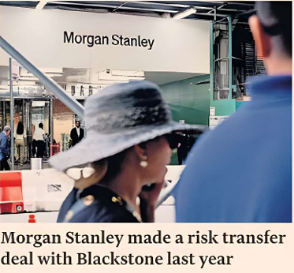

Eric Platt and Amelia Pollard — New York, Ortenca Aliaj — London

Wall Street banks are expanding their use of complex risk transfer deals to offload exposure from prime brokerage divisions, freeing up cash to lend to hedge funds in pursuit of a bigger share of a booming market.
Morgan Stanley last year struck a deal with Blackstone to transfer a portion of the risk on loans made by the bank’s prime brokerage unit and release capital for more lending, people familiar with the transaction said.
The deal, which required Morgan Stanley to retain a portion of the risk, provided the US investment bank regulatory capital relief and gave the unit responsible for lending to hedge funds added firepower.
US banks have increasingly turned to credit risk transfers — also known as synthetic risk transfers — to reduce the amount of capital they must use to guard against losses on the loans they have underwritten since domestic regulators blessed the deals in 2023.
But the use of SRTs for margin loans marks a jump from the relatively vanilla corporate and consumer loans that have traditionally underpinned the capital relief trades.
Banks have been searching for ways to gain that same relief for their prime brokerage units, which have been a big profit centre as trading activity has surged.
“The way to think about SRTs is not strictly about protecting the downside,” said Michael Shemi, the head of North America structured credit at Guy Carpenter. “It’s the other way around: they are designed to unlock the upside for banks. Banks pursue these transactions to improve profitability and to facilitate growth in specific asset classes.”
Other than Morgan Stanley’s deal with Blackstone, however, US banks have mostly struggled to complete SRTs on margin loans, according to more than half a dozen people who transact in the credit risk transfer market.
Margin loans allow hedge funds to supercharge their trading, using the financing from banks’ prime brokerage units to buy stocks and bonds or enter into swaps and derivatives transactions on borrowed money.
Banks are exposed if a big hedge fund fails to meet a margin call and suffers large losses, inflicting losses on their prime brokerage units.
Prime brokerage can be a particularly risky business and has attracted political scrutiny since Archegos Capital Management’s implosion in 2021. Banks including Credit Suisse, Nomura and Morgan Stanley suffered more than $10bn of combined losses tied to Archegos.
Banks have found it hard to complete SRTs on prime broking loans in part because they often agree to strict confidentiality terms with their clients and cannot reveal the underlying positions of the hedge funds. Even describing them could reveal trade secrets.
Positions can also change rapidly — given a hedge fund’s typical trading patterns — meaning the collateral underlying the credit risk transfer when it is first struck may change days or weeks later.
Instead, an investor must rely on their own view of a bank’s prime brokerage business and its risk management policies.
Banks that have struck these prime brokerage risk transfer trades have offered so-called white lists to would-be investors and often described which hedge funds make up the bulk of their exposure. The list includes the names of hedge funds that could be included in the risk transfer.
For some money managers, that can be enough — especially if they are separately invested with the hedge funds included on those white lists.
In those cases, the money manager can then assess the risks of the hedge fund’s trading book.
Even so, people familiar with the discussions said some banks had found the transactions too expensive to complete